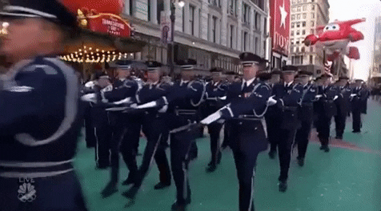
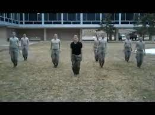

A class where you can learn the fundementals of the U.S. Airforce.
Aerospace Science
AS 100: A Journey into Aviation History
AS 200: The Science of Flight: A Gateway to New Horizons
AS 220: Cultural Studies: An Introduction to Global Awareness
AS 300: Exploring Space: The High Frontier
AS 300: Exploring Space: The High Frontier, Aerospace Science is typically the third/fourth-year science course in the high school sequence of Aerospace Science courses for the Air Force Junior ROTC. This course has been completely rewritten to include the latest information and teaching philosophies, incorporating 21st century learning strategies. This new course provides students with the latest information on exploring space and an introduction to cybersecurity and technology. The textbook will begin with early astronomy and the basic interest in the universe from the Greeks through the Renaissance and Enlightenment ages. Students will be provided an in-depth view of the solar system, including Earth, the Sun, the Moon, and planets. The text also discusses the history of space travel and more modern space probes and robotics. Students will examine the effects of space on the human body. The text also investigates the history of rockets, launch vehicles, and the coordinated systems required for a successful launch into space. Finally, the text will offer a cybersecurity chapter that outlines the importance of cybersecurity in space and in daily life.
Leadership Education
LE 100: Citizenship, Character, and Air Force Tradition
LE 200: Communication, Awareness, and Leadership
LE 300: Life Skills and Career Opportunities
LE 400: Principles of Management
Leadership Education 200: Communication, Awareness, and Leadership, Second Edition, is a customized course designed to improve communication, enhance awareness of self and others, and provide fundamentals of leadership and followership. The course focuses on the Air Force Junior Reserve Officer Training Corps (AFJROTC) mission to develop citizens of character dedicated to serving their nation and community. Woven throughout is the underlying theme of developing personal integrity. The course also emphasizes leadership and values such as service and excellence. This update incorporates 21st century teaching, learning, and skills of critical thinking, communication, collaboration, and creativity.

Air force marching for the "Macy's Parade".
Health and Wellness

Cadets standing at attention.
Wellness is an official part of the Air Force Junior ROTC program and each JROTC course provides 1/2 wellness credit toward graduation. It is an exercise program focused upon individual base line improvements with the goal of achieving a national standard as calculated with age and gender. Wellness is instrumental in developing citizens of character dedicated to serving our nation and community. An Air Force Physical Fitness Test is conducted as part of the course. Instructors will routinely include other activities cadets enjoy such as team sports to keep the wellness program fun and motivating.